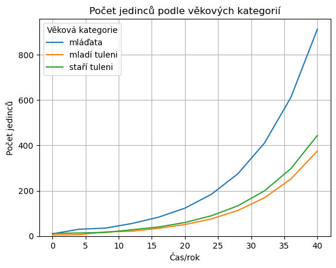
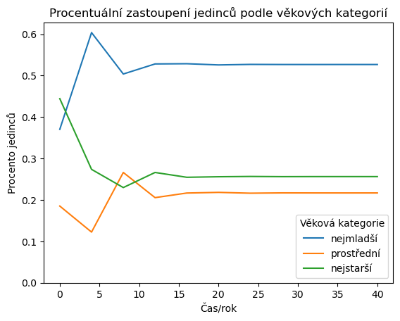
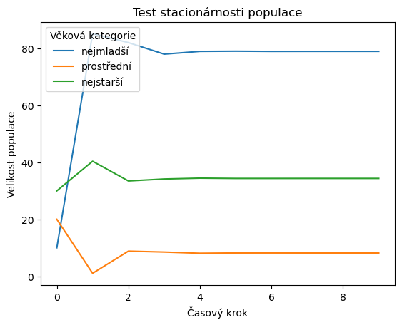
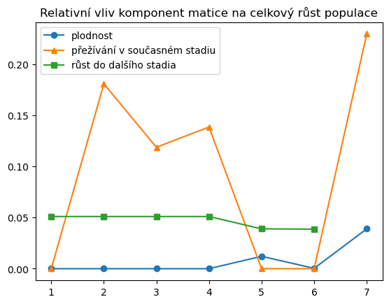

Maticové modely
Contents
7. Maticové modely#
import numpy as np
import matplotlib.pyplot as plt
import pandas as pd
#from scipy.integrate import solve_ivp
from scipy import optimize
np.set_printoptions(suppress=True)
Při práci s maticemi musíme dávat pozor, že když proměnnou uložíme do jiné proměnné a novou proměnnou poté modifikujeme, modifikuje se i původní objekt. To proto, že nevzniká nová matice, ale jenom nový odkaz na matici původní.
Vyzkoušejte si následující kód.
a = np.matrix([1,2,3,4]) # vytvoření matice a
b = a # uložení do matice b
b[0,3] = -100 # změna jednoho prvku matice b
print(a) # test jestli se změnila matice a
print(b) # test jestli se změnila matice b
[[ 1 2 3 -100]]
[[ 1 2 3 -100]]
Pokud je výše popsané chování nežádoucí, použijeme copy.
a = np.matrix([1,2,3,4]) # vytvoření matice a
b = a.copy() # uložení KOPIE do matice b
b[0,3] = -100 # změna jednoho prvku matice b
print(a) # test jestli se změnila matice a
print(b) # test jestli se změnila matice b
[[1 2 3 4]]
[[ 1 2 3 -100]]
7.1. Leslieho model#
Nejprve prozkoumáme Lesliseho model populace tuleňů z přednášky. Prvotní informace se týká vývoje populace. Rychlou představu soi uděláme z grafu sledujícího vývoj jednotlivých věkových skupin v čase.
L = np.matrix([
0, 1.26, 2.0,
0.614, 0, 0,
0, 0.808, 0.808
]).reshape(3,3)
L
matrix([[0. , 1.26 , 2. ],
[0.614, 0. , 0. ],
[0. , 0.808, 0.808]])
N = 10
X = np.zeros((3,N+1))
X[:,0] = [10,5,12]
for i in range(N):
X[:,[i+1]] = L*X[:,[i]]
fig, ax = plt.subplots(1)
cas = np.linspace(0,N,N+1) * 4 # časový krok v modelu jsou čtyři roky
ax.plot(cas,X.T)
ax.legend(
["mláďata","mladí tuleni","staří tuleni"],
title="Věková kategorie"
)
ax.set(
ylim=(0,None),
title="Počet jedinců podle věkových kategorií",
ylabel="Počet jedinců",
xlabel="Čas/rok"
)
ax.grid();

Ověříme, že věková struktura konverguje ke stálému složení populace.
podil = np.array([i/sum(i) for i in X.T])
plt.plot(cas,podil)
ax = plt.gca()
ax.set(
ylim=(0,None),
title="Procentuální zastoupení jedinců podle věkových kategorií",
ylabel="Procento jedinců",
xlabel="Čas/rok"
)
ax.legend(
["nejmladší","prostřední","nejstarší"],
title="Věková kategorie"
);

Numerické hodnoty určující procentuální zastoupení jednotlivých věkových skupin získáme z konce simulace.
podil[-1]*100
array([52.68328969, 21.68662839, 25.63008192])
Lesliho matice má (za předpokladu, že alespoň dva po sobě jdoucí koeficienty v prvním řádku matice jsou nenulové) dominantní reálnou vlastní hodnotu. Vektor odpovídající této vlastní hodnotě určuje zastoupení jednotlivých věkových tříd. Tuto informaci můžeme porovnat s již zjištěnou strukturou populace. Obecně mohou být vlastní čísla a vlastní vektory i komplexní.
v,P = np.linalg.eig(L)
print("Vlastní čísla: ",v)
print("Vlastní vektory jsou sloupce matice\n",P)
Vlastní čísla: [-0.34182332+0.35954975j -0.34182332-0.35954975j 1.49164663+0.j ]
Vlastní vektory jsou sloupce matice
[[ 0.38392628-0.40383611j 0.38392628+0.40383611j 0.84331389+0.j ]
[-0.68962744+0.j -0.68962744-0.j 0.34712962+0.j ]
[ 0.44144739+0.1380406j 0.44144739-0.1380406j 0.4102715 +0.j ]]
Odfiltrujeme komplexní čísla. Kvůli numerickému zaokrouhlování nemá smysl u komplexních čísel testovat, zda je imaginární část přesně nulová. Namísto toho zvolíme jistý práh, od kterého budeme imaginární část považovat za nulovou.
vh,vs = [ [i.real,j.real] for i,j in zip(v,P.T) if np.abs(i.imag)<1e-2 ][0]
vs = vs.A1 # převod na vektor
vs = vs/sum(vs) # normování aby součet komponent byl jedna
print("Reálná vlastní hodnota/hodnoty je/jsou ",vh)
print("Příslušný vlastní směr/směry je/jsou ", vs)
Reálná vlastní hodnota/hodnoty je/jsou 1.4916466348833584
Příslušný vlastní směr/směry je/jsou [0.52683575 0.2168591 0.25630515]
l_index = np.argmax(v)
l = max(v).real
l
1.4916466348833584
Poznámka: Při porovnávání komplexních čísel používá knihovna NumPy reálnou komponentu. Toto chování vyhovuje u vlastních čísel v případě, kdy víme, že dominantní vlastní hodnota je reálná. Leslieho matice je představitelem takové úlohy, kdy jistotu reálné vlastní hodnoty zpravidla máme.
# U komplexních čísel neexistuje relace uspořádání podle velikosti.
# Pro porovnávání se v knihovně NumPy používá reálná část.
np.max([0+300j, 2+0j, 1+4j])
(2+0j)
7.1.1. Parametr pro zastavení růstu#
Budeme hledat, jak je potřeba změnit parametry populace tak, aby se růst populace zastavil. K zastavení vybereme vhodný parametr. Například parametr ve druhém řádku a prvním sloupci. Tento parametr udává, jaká je pravděpodobnost, že se nejmladší věková kategorie dožije přestupu do starší kategorie. Budeme se tedy snažit lovit nejmladší jedince v populaci. Otázkou je, jak intenzivně musíme lovit, aby se růst populace zastavil.
# musíme vytvořit kopii matice, aby se prvky původní matice neměnily
L_fix = L.copy()
# Potřebujeme, aby největší vlastní číslo bylo rovno jedné.
# K tomu nadefinujeme funkci, která nám toto vlastní číslo vypočítá
# v závislosti na tom, jak se změní prvek, se kterým manipulujeme.
def nejvetsi_vlastni_cislo(x, M):
M[1,0] = x
v = np.linalg.eigvals(M)
return max(v).real
# Nakonec určíme, pro jakou hodnotu je vlastní číslo rovno jedné.
oprava = optimize.fsolve(lambda x:nejvetsi_vlastni_cislo(x, L_fix)-1,0.6)
L_fix
matrix([[0. , 1.26 , 2. ],
[0.10334137, 0. , 0. ],
[0. , 0.808 , 0.808 ]])
Kontrola vlatních čísel. Dominantní vlastní číslo musí mít reálnou část jednotkovou a komplexní část nulovou. Tedy 1+0j.
np.linalg.eigvals(L_fix)
array([-0.096+0.22928993j, -0.096-0.22928993j, 1. +0.j ])
Rychlá vizuální kontrola pro ty, co se nechtějí spoléhat na vlastní čísla. Také pomůže pro odhad, jak rychle se věkové složení ustálí.
ini = np.matrix([10,20,30]).reshape(3,1)
k = 10
model = np.zeros([3,k])
model[:,[0]] = ini
for i in range(k-1):
model[:,[i+1]] = L_fix * model[:,[i]]
plt.plot(model.T)
plt.xlabel("Časový krok")
plt.ylabel("Velikost populace")
plt.legend(
["nejmladší","prostřední","nejstarší"],
title="Věková kategorie"
)
plt.title("Test stacionárnosti populace");

7.1.2. Matice sensitivity a elasticity#
Výpočet matice elasticity pomocí levých a pravých vlastních vektorů. Pro násobení matic po složkách (Hadamardův součin) převedeme matice na dvourozměrná pole.
W = P[:,l_index].real # pravý sloupcový vlastni vektor příslušný maximální vlastní hodnotě
V = (P**(-1))[l_index,:].real # levý řádkový vlastní vektor příslušný maximální vlastní hodnotě
matice_elasticity = np.matrix(np.array(V.T*W.T)*np.array(L)/l)
matice_elasticity
matrix([[0. , 0.10157076, 0.19054952],
[0.29212028, 0. , 0. ],
[0. , 0.19054952, 0.22520993]])
Výpočet matice elasticity z definice pomocí parciálních derivací a centrální diference. Jedná se o výpočet přímo z definice. Výpočet je méně elegantní než výpočet z předchozího pole, ale nespoléhá se například na vztah mezi levými a pravými vlastními vektory. Podobné taktiky, kdy stejnou veličinu počítáme dvěma různými způsoby, se často používají k tomu, abychom ověřili, že programový kód neobsahuje logické chyby a že počítá to, co potřebujeme.
h = 0.01
matice = np.zeros([3,3])
matice
for f1 in range(3):
for f2 in range(3):
if L[f1,f2] == 0:
matice[f1,f2] = 0
else:
L2 = L.copy()
L3 = L.copy()
L2[f1,f2] = L2[f1,f2] + h
L3[f1,f2] = L3[f1,f2] - h
v2 = np.linalg.eigvals(L2).max().real
v3 = np.linalg.eigvals(L3).max().real
matice[f1,f2] = ((v2-v3)/(2*h))*L[f1,f2]/l
matice = np.matrix(matice)
matice
matrix([[0. , 0.10157068, 0.19055025],
[0.29212876, 0. , 0. ],
[0. , 0.19055404, 0.22521132]])
np.sum(matice_elasticity)
0.9999999999999999
np.sum(matice_elasticity, axis=1)
matrix([[0.29212028],
[0.29212028],
[0.41575944]])
np.sum(matice_elasticity,axis=0)
matrix([[0.29212028, 0.29212028, 0.41575944]])
Levý vlastní vektor je reprodukční hodnota jednotlivých věkových kategorií. Udává očekávaný počet potomků na jedince v dané věkové kategorii a v kategoriích následujících. Počty jsou vyjádřeny relativně vzhledem k nejmladší kategorii, která má reprodukční hodnotu rovnu jedné. Přitom se nejedná o prostý součet, ale je zde zohledněn růst populace, tedy jestli se budoucí potomci rodí do větší či menší populace (viz Tkadlec strana 121).
V/V[0,0]
matrix([[1. , 2.42939191, 2.92548796]])
7.2. Model jelena evropského (red deer, Cervus elaphus)#
Model je představen a studován ve výukovém materiálu https://www.youtube.com/watch?v=cMQd-okvS_M Populace laní jelena evropského je rozdělena na rok staré laně, dva roky staré laně a starší laně. Projekční matice populace je následující.
L = np.matrix([0, 0.2, 0.26,
0.93, 0, 0,
0, 0.97, 0.91]).reshape(3,3)
L
matrix([[0. , 0.2 , 0.26],
[0.93, 0. , 0. ],
[0. , 0.97, 0.91]])
Nejprve vypočteme vlastní čísla a najdeme dominantní vlastní číslo.
vlastni_cisla, vlastni_vektory = np.linalg.eig(L)
maximum_index = np.argmax(vlastni_cisla)
vlastni_cisla[maximum_index]
(1.1265483882211464+0j)
Pro jednoduché seznámení se s modelem je možné snížit jednu komponentu například o deset procent a sledovat odezvu, jak moc se změní dominantní vlastní hodnota.
L_redukce_porodnosti = L.copy()
L_redukce_porodnosti[0,2] = 0.9*L_redukce_porodnosti[0,2]
np.linalg.eigvals(L_redukce_porodnosti).max()
(1.111253336399596+0j)
L_redukce_prezivani = L.copy()
L_redukce_prezivani[2,2] = 0.9*L_redukce_prezivani[2,2]
np.linalg.eigvals(L_redukce_prezivani).max()
(1.0658700220796447+0j)
Detailnější analýzu poskytne matice elasticity.
W = vlastni_vektory[:,maximum_index]
V = (vlastni_vektory**(-1))[maximum_index,:]
matice_sensitivity = np.around(V.T*W.T,decimals=5).real
matice_elasticity = (np.array(matice_sensitivity)*np.array(L)/max(vlastni_cisla)).real
matice_elasticity
array([[0. , 0.02275801, 0.13252391],
[0.15528228, 0. , 0. ],
[0. , 0.13252223, 0.55690577]])
matice_elasticity.sum(axis=0)
array([0.15528228, 0.15528024, 0.68942968])
Reprodukční hodnotu můžeme určit z levého vlastního vektoru příslušného dominantní vlastní hodnotě.
(V/V[0,0]).real
matrix([[1. , 1.21134235, 1.20065544]])
Pro kontrolu můžeme vypočítat komponenty matice elasticity z definice, kdy parciální derivaci nahradíme centrální diferencí.
h = 0.001
matice = np.zeros([3,3])
matice
for f1 in [0,1,2]:
for f2 in [0,1,2]:
if L[f1,f2] == 0:
matice[f1,f2] = 0
else:
L2 = L.copy()
L3 = L.copy()
L2[f1,f2] = L2[f1,f2] + h
L3[f1,f2] = L3[f1,f2] - h
v2,P2 = np.linalg.eig(L2)
v3,P3 = np.linalg.eig(L3)
matice[f1,f2] = ((max(v2)-max(v3))/(2*h)*L[f1,f2]/max(vlastni_cisla)).real
matice = np.matrix(matice)
matice
matrix([[0. , 0.02275818, 0.13252514],
[0.15528314, 0. , 0. ],
[0. , 0.13252496, 0.55690873]])
7.3. Tropický strom#
Model je studován ve výukovém materiálu https://www.youtube.com/watch?v=cMQd-okvS_M
L = np.matrix([0.3, 0, 0, 100, 150,
0.05, 0.4, 0, 0, 0,
0, 0.1, 0.6, 0, 0,
0, 0, 0.1, 0.7, 0,
0, 0, 0, 0.1, 0.99]).reshape(5,5)
L
matrix([[ 0.3 , 0. , 0. , 100. , 150. ],
[ 0.05, 0.4 , 0. , 0. , 0. ],
[ 0. , 0.1 , 0.6 , 0. , 0. ],
[ 0. , 0. , 0.1 , 0.7 , 0. ],
[ 0. , 0. , 0. , 0.1 , 0.99]])
vlastni_cisla, vlastni_vektory = np.linalg.eig(L)
maximum_index = np.argmax(vlastni_cisla)
maximum_cislo = vlastni_cisla[maximum_index].real
W = vlastni_vektory[:,maximum_index].real
V = (vlastni_vektory**(-1))[maximum_index,:].real
matice_sensitivity = np.around(V.T*W.T,decimals=5)
matice_elasticity = np.array(matice_sensitivity)*np.array(L)/maximum_cislo
matice_elasticity
array([[0.02796033, 0. , 0. , 0.03259729, 0.04210483],
[0.07496743, 0.04257206, 0. , 0. , 0. ],
[0. , 0.07496743, 0.08918076, 0. , 0. ],
[0. , 0. , 0.07496743, 0.12977163, 0. ],
[0. , 0. , 0. , 0.04253313, 0.36811714]])
matice_elasticity.sum(axis=0)
array([0.10292776, 0.11753949, 0.16414819, 0.20490205, 0.41022197])
pW = 100*W/np.linalg.norm(W,1)
pW
matrix([[91.6103505 ],
[ 6.50284929],
[ 1.28925986],
[ 0.31881893],
[ 0.27872141]])
sum(pW)
matrix([[100.]])
V/V[0,0]
matrix([[ 1. , 16.08772469, 113.31971822, 571.56905993,
1311.34660023]])
7.4. Kareta obecná (Loggerhead sea turtle)#
Model života Karety obecné je podle publikace Deborah T. Crouse, Larry B. Crowder, Hal Caswell: A Stage-Based Population Model for Loggerhead Sea Turtles and Implications for Conservation, Ecology, Vol. 68, No. 5 (Oct., 1987), pp. 1412-1423.
V tomto modelu autoři studují dříve publikovaný model založený na matici o velikosti \(54\times54\) (Frazer) a místo stáří dělí populaci do vývojových stadií. Tím dosáhnou při zachování přesnosti modelu výrazného snížení řádu matice, což umožňuje detailnější analýzu.
Jendotlivé třídy jsou (podle [16]) (1) vajíčka a vylíhlá mláďata, (2) mladší juvenilní jedinci, (3) starší juvenilní jedinci, (4) subadultní jedinci, (5) poprvé se množící, (6) jednoletí migranti a (7) dospělí. Třídy 5, 6 a 7 jsou uvažovány samostatně kvůli velkým rozdílům ve fertilitě (Frazer 1984). Přibližný věk v jednotlivých kategoriích je pod jeden rok, 1 až 7 let, 8 až 15 let, 16 až 21 let, 22 let, 23 let a 24 až 54 let.
np.set_printoptions(suppress=True, linewidth=100);
N = 7
M = np.zeros([N,N])
M[[0],:] = [0,0,0,0,127,4,80]
M[np.arange(N),np.arange(N)] = [0,0.7370,0.6610, 0.6907, 0,0,0.8089]
M[np.arange(1,N),np.arange(N-1)] = [0.6747, 0.0486, 0.0147, 0.0518, 0.8091, 0.8091]
M = np.matrix(M)
M
matrix([[ 0. , 0. , 0. , 0. , 127. , 4. , 80. ],
[ 0.6747, 0.737 , 0. , 0. , 0. , 0. , 0. ],
[ 0. , 0.0486, 0.661 , 0. , 0. , 0. , 0. ],
[ 0. , 0. , 0.0147, 0.6907, 0. , 0. , 0. ],
[ 0. , 0. , 0. , 0.0518, 0. , 0. , 0. ],
[ 0. , 0. , 0. , 0. , 0.8091, 0. , 0. ],
[ 0. , 0. , 0. , 0. , 0. , 0.8091, 0.8089]])
vlastni_cisla, vlastni_vektory = np.linalg.eig(M)
maximum_index = vlastni_cisla.argmax()
vlastni_cisla[maximum_index]
(0.9450309806910039+0j)
w = vlastni_vektory[:,[vlastni_cisla.argmax()]].real
w = w/sum(w)*100
w
matrix([[20.65048418],
[66.97503241],
[11.4599702 ],
[ 0.66237138],
[ 0.03630657],
[ 0.03108432],
[ 0.18475094]])
np.log(vlastni_cisla[maximum_index].real)
-0.056537568225767214
Levý vlastní vektor příslušný dominantní vlastní hodnotě reprodukční hodnota příslušné třídy. Jedná se o celkový příspěvek třídy a všech pozdějších tříd k populačnímu růstu vyjádřený počtem potomků uvažovaných různou vahou podle toho, zda se rodí do velké či malé populace a vyjádřený v násobcích reprodukční hodnoty nejmladší kategorie. (vektor je normalizovaný tak, aby první komponenta byla rovna jedné).
leve_vlastni_vektory = vlastni_vektory**(-1)
(leve_vlastni_vektory[maximum_index]/leve_vlastni_vektory[maximum_index,0]).real
matrix([[ 1. , 1.40066842, 5.99552313, 115.84451127, 568.78085247, 507.37304018,
587.66931373]])
W = vlastni_vektory[:,maximum_index].real
V = (vlastni_vektory**(-1)).conjugate()[maximum_index,:].T.real
matice_sensitivity = np.around(V*W.T,decimals=5)
matice_elasticity = np.array(matice_sensitivity)*np.array(M)/vlastni_cisla[maximum_index]
matice_elasticity = matice_elasticity.real
matice_elasticity
array([[0. , 0. , 0. , 0. , 0.01209484, 0.00033861, 0.03894052],
[0.05100422, 0.18068776, 0. , 0. , 0. , 0. , 0. ],
[0. , 0.0510021 , 0.11868933, 0. , 0. , 0. , 0. ],
[0. , 0. , 0.05100204, 0.13850822, 0. , 0. , 0. ],
[0. , 0. , 0. , 0.05100187, 0. , 0. , 0. ],
[0. , 0. , 0. , 0. , 0.03895539, 0. , 0. ],
[0. , 0. , 0. , 0. , 0. , 0.03863005, 0.2295232 ]])
matice_elasticity.sum(axis=0)*100
array([ 5.100422 , 23.16898583, 16.96913649, 18.95100866, 5.10502311, 3.89686611, 26.84637225])
V původní publikaci, kde se objevil tento model, je vliv jednotlivých komponent matice vyjádřen i graficky. Pokusíme se tento obrázek zreprodukovat.
stav = np.arange(1,N+1)
plt.plot(stav, matice_elasticity[0,:],"o-",label = "plodnost")
plt.plot(stav, matice_elasticity[np.arange(N),np.arange(N)], "^-", label="přežívání v současném stadiu")
plt.plot(stav[:-1], matice_elasticity[np.arange(1,N),np.arange(N-1)], "s-", label="růst do dalšího stadia")
plt.legend()
plt.title("Relativní vliv komponent matice na celkový růst populace");

Výstupem z modelu je skutečnost, že při snaze zachránit populaci karety má ochrana vajíček, na kterou se tradičně zaměřovala pozornost, jenom malý vliv na celkovou kondici populace. Účelnější je zaměřit se na přežívání dospívajících a dospělých želv. Toho je možné dosáhnout úpravou rybářských sítí tak, aby z nich želvy mohly uniknout. Viz Turtle Excluder Device.